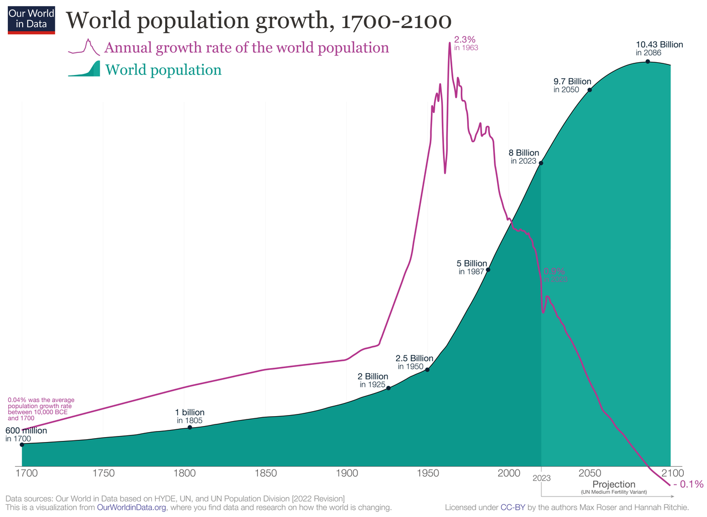

Global Population
Explore the world's population dynamics, challenges, and potential solutions.
About
The global population has experienced unprecedented growth over the past century, rising from 1.6 billion in 1900 to 7.9 billion in 2022. This rapid increase has significant implications for the environment, resources, and socio-economic development.
Population Trends
- Population Growth: The world's population is projected to reach 8.5 billion by 2030 and 9.7 billion by 2050.
- Regional Variations: Africa and Asia are experiencing the highest population growth rates, while Europe and North America have slower growth.
- Urbanization: Over 55% of the world's population now lives in urban areas, with this percentage projected to increase in the future.
- Aging Population: Many countries are facing an aging population due to declining fertility rates and increased life expectancy.
Population Challenges
- Food Security: Ensuring adequate food supply for a growing population while addressing issues like climate change, soil degradation, and water scarcity.
- Environmental Impact: Population growth exacerbates environmental challenges, such as deforestation, biodiversity loss, and greenhouse gas emissions.
- Access to Healthcare: Providing quality healthcare services to a larger and aging population, particularly in developing regions.
- Resource Depletion: Increasing demand for natural resources like water, energy, and minerals due to population growth and economic development.
Potential Solutions
- Family Planning: Promoting access to family planning services and education to manage population growth rates.
- Sustainable Development: Implementing policies and practices that balance economic growth, social development, and environmental protection.
- Renewable Energy: Investing in renewable energy sources to meet the growing energy demands of a larger population while reducing greenhouse gas emissions.
- Urban Planning: Developing sustainable and livable cities through efficient urban planning, transportation systems, and infrastructure.